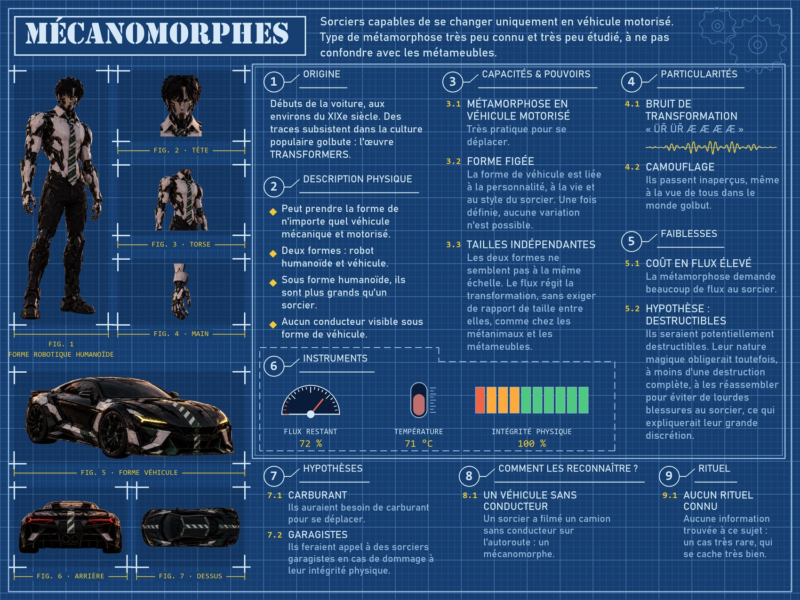

Les Mécanomorphes
Des sorciers capables de se changer uniquement en véhicule motorisé : un type de métamorphose très peu connu et très peu étudié, à ne pas confondre avec les métameubles. Il serait apparu avec les débuts de la voiture, vers le XIXe siècle, et la culture populaire golbute en garde une trace : l’œuvre Transformers.
Un mécanomorphe a deux formes, un robot humanoïde plus grand qu’un sorcier et un véhicule sans conducteur visible. La forme de véhicule, liée à la personnalité, à la vie et au style du sorcier, ne varie plus une fois définie ; les deux formes n’ont pas la même échelle, car le flux régit la transformation sans exiger de rapport de taille. Ils passent inaperçus dans le monde golbut, mais la métamorphose leur coûte beaucoup de flux.
Le reste tient de l’hypothèse : ils seraient destructibles et devraient être réassemblés pour éviter de lourdes blessures au sorcier, ce qui expliquerait leur grande discrétion ; ils auraient besoin de carburant et feraient appel à des sorciers garagistes. Aucun rituel n’est connu.
Fiche

Animation
